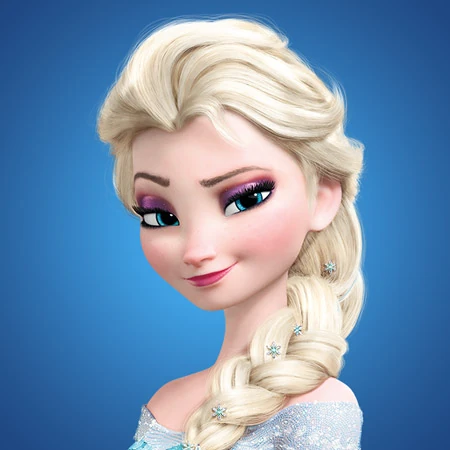
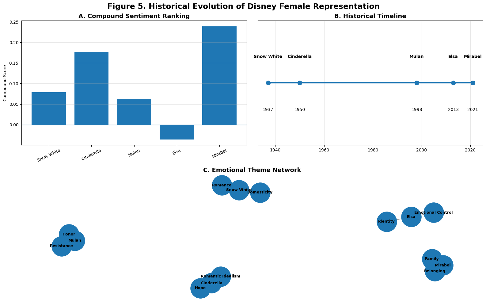

Results


Figure 1. Evolution of Emotional Language
Earlier protagonists show emotionally positive and romantic language, while later characters reflect identity and emotional complexity.


Figure 2. Theme Evolution
Snow White and Cinderella show the highest romance and domesticity scores (9–10), while Elsa demonstrates the highest emotional control score (10).


Figure 3. Positive vs. Negative Emotional Language
Mirabel demonstrates the highest positive sentiment score (0.284), while Elsa presents the highest negative sentiment score (0.144).


Figure 4. Lexical and Emotional Patterns
Snow White and Cinderella use romantic expressions, while Elsa demonstrates emotional repression and control.


Figure 5. Historical Evolution of Disney Female Representation
Mirabel has the highest compound sentiment score (0.239), while Elsa presents the only negative compound score (-0.036).